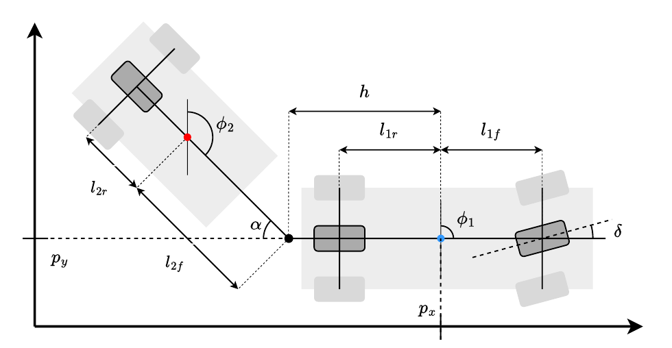
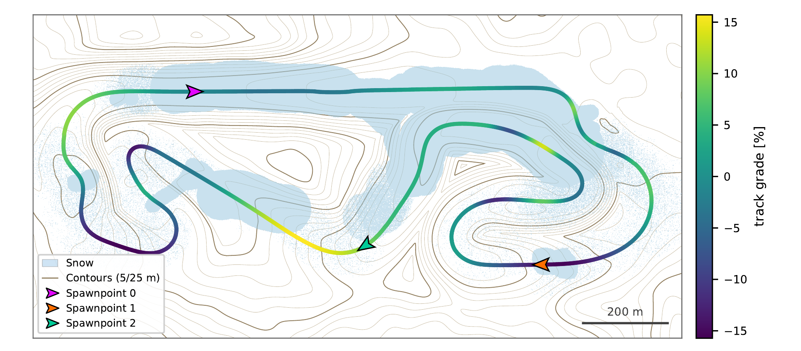
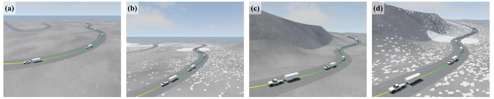
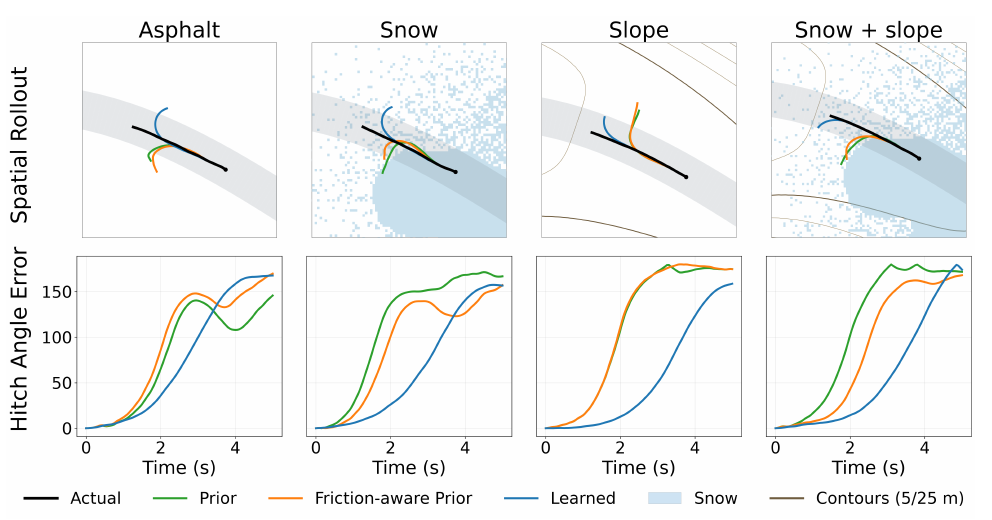
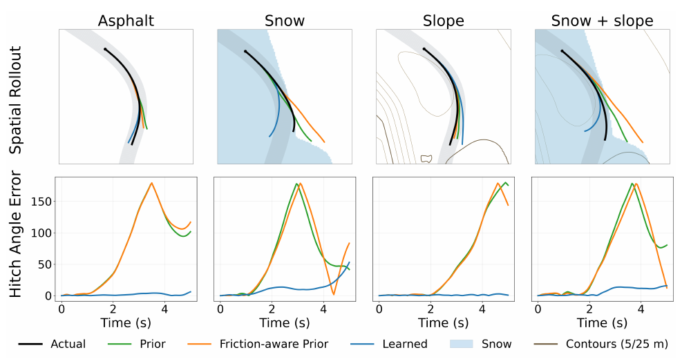

Track the target speed
Reach the commanded forward or reverse velocity without stalling.
University of Michigan · *Equal contribution
1Electrical Engineering and Computer Science · 2Robotics · 3Aerospace Engineering
High-speed reverse driving · Hidden vehicle dynamics · Snow and uneven terrain

Reversing a tractor–trailer at speed is especially sensitive to modeling error: the passive trailer can rapidly jackknife, while friction, suspension, and terrain effects are only partially observed. We use a history-based neural dynamics model within MPPI to control the vehicle in BeamNG.tech, testing reverse speed targets of 30 and 50 km/h and a forward target of 80 km/h.
Across asphalt, snow, slope, and combined snow-plus-slope terrain, learned dynamics generally improve speed tracking and jackknife avoidance relative to a Fiala-tire analytic prior and three baseline controllers. Separate five-second rollout comparisons test whether giving the analytic prior access to local friction closes the prediction gap. Slope and banking are absent from the learned model’s training data.
Maintain stable high-speed motion when vehicle and terrain dynamics are only partially observed.
Reach the commanded forward or reverse velocity without stalling.
Keep the tractor–trailer articulation bounded to avoid jackknife.
Condition predictions on observed history without explicit friction or terrain inputs.
Tractor–trailer systems offer a demanding setting for learned dynamics: the vehicle is nonlinear and underactuated, while the passive trailer can rapidly destabilize the overall system near its handling limits.
The tractor is actuated, but the trailer is not. Steering the tractor changes the hitch angle and trailer motion through a rigid mechanical coupling that is difficult to stabilize.
In reverse, small errors in the predicted motion can compound quickly into hitch-angle growth. At higher speeds, there is less time to correct before jackknife or track departure.
Road friction, slope, banking, load transfer, and suspension behavior are difficult to measure online, yet they substantially change how the vehicle responds.
Most tractor–trailer research emphasizes parking, navigation, or collision avoidance; high-speed work usually assumes a fixed analytic model and rarely studies reverse motion. High-speed reverse driving over snowy, sloped terrain is therefore a direct test of whether learned dynamics can provide useful control predictions when the analytic prior is incomplete.
Evaluate learned-dynamics MPPI against analytic-prior MPPI, LQR-PID, IPOPT-based MPC, and MPCC under uncertain vehicle and environmental conditions.
Compare five-second rollouts from learned dynamics, a fixed-friction analytic prior, and a prior given privileged local-friction information.
Derive a coupled tractor–trailer model with Fiala brush tire forces, providing a physical baseline for control and dynamics prediction.
Our controller relies on learned state transitions that remain informative when high-fidelity vehicle effects and terrain variables are not directly measured.

An MLP with four hidden layers of 128 units consumes four steps of state-action history. It predicts linear and angular accelerations and realized control states; the dynamics are integrated with explicit Euler.
Recent motion supplies context about unobserved operating conditions. The learned predictor receives no explicit friction, road slope, banking, or suspension state.
Data collection varies friction and target speed, adds control noise and forward weaving, and iteratively adds trajectories collected by the learned controller near handling limits.
A direct prediction of vehicle response from recent motion. Training data are standardized, and the distinction between commanded and realized controls accounts for actuator response.
Each history step contains sine and cosine of the hitch angle, body-frame velocity, tractor and trailer yaw rates, and commanded and realized steering and acceleration.
The network outputs longitudinal and lateral acceleration, both yaw accelerations, and the next realized steering and acceleration states.
Four initial analytic-MPPI steps populate the history with observed motion, avoiding an artificial history that could fall outside the training distribution.
Alongside the learned predictor, we derive a reduced-order model with Fiala brush tire forces. It exposes the physical coupling at the hitch and serves as an interpretable analytic prior.
The model state includes tractor position and yaw, trailer yaw, longitudinal and lateral tractor velocity, and the two yaw rates. The hitch angle is the difference between tractor and trailer yaw.
A rigid hitch couples tractor and trailer acceleration: tire forces, inertial effects, and body-frame motion terms are solved together at every rollout step. This coupling is what makes reverse driving especially sensitive to modeling error.
Lateral tire forces use a Fiala brush model, with slip-angle saturation governed by road friction, normal load, and cornering stiffness. This prior is used directly for baseline control and as the physics component of the residual formulation.
The trailer velocity is induced by tractor motion and trailer yaw rate, so accelerations cannot be solved independently.
At every rollout step, the coupled acceleration system is solved and then integrated forward to update the vehicle state.
The reduced-order prior omits many soft-body, terrain, and powertrain effects present in BeamNG.tech. The fully learned predictor models the response directly from data.
The track follows the Circuit de Barcelona-Catalunya layout in BeamNG.tech. Snow and terrain modifications are added independently, using the same snow pattern and the same terrain wherever each appears. Both sloped settings test transfer to elevation changes and banking absent from training.
Uniform high-friction, flat pavement in the high-fidelity simulator. This nominal condition isolates unknown vehicle dynamics.
Noisy patches of low-friction snow interrupt an otherwise flat track, creating changing tire behavior under the same track geometry.
Uniform high-friction asphalt with elevation changes and banking. This isolates terrain variation from the effects of snow.
The snow pattern and sloped terrain are combined, testing changing traction and unseen terrain together.


Learned-dynamics MPPI is compared with Fiala-prior MPPI, LQR-PID, IPOPT-based MPC, and MPCC. Each environment and velocity configuration has nine runs: three seeds at each of three starting locations. A completed run reaches 500 control steps, equivalent to 25 seconds.
The learned controller completes all nine runs at each of the three speed targets on both Asphalt and Snow. At the −50 km/h target, its mean speed is 47.2 km/h on Asphalt and 46.0 km/h on Snow, compared with 22.7 and 22.8 km/h for Fiala-prior MPPI.
On Slope, learned control completes 8/9 runs at each reverse target and 9/9 forward runs. It has lower RMS hitch angle than Fiala-prior MPPI at all three targets, although one −50 km/h run ends in jackknife.
On Snow + slope, learned control has no jackknife failures in the reported trials. Reverse stalls still limit completion to 6/9 runs at −30 km/h and 4/9 at −50 km/h; all nine forward runs complete.
The fastest reverse target makes the tradeoff between speed and stability visible. Each cell reports completed runs out of nine, followed by mean speed magnitude in km/h.
| Controller / rollout model | Asphalt | Snow | Slope | Snow + slope |
|---|---|---|---|---|
| Fully learned MPPI | 9/9 · 47.2 | 9/9 · 46.0 | 8/9 · 42.1 | 4/9 · 30.4 |
| Fiala-prior MPPI | 6/9 · 22.7 | 5/9 · 22.8 | 6/9 · 22.5 | 2/9 · 18.1 |
| LQR-PID | 6/9 · 45.1 | 6/9 · 48.8 | 6/9 · 46.9 | 3/9 · 37.1 |
| IPOPT-based MPC | 0/9 · 32.2 | 0/9 · 31.9 | 3/9 · 26.3 | 3/9 · 23.5 |
| MPCC | 0/9 · 39.3 | 0/9 · 30.2 | 1/9 · 37.3 | 0/9 · 25.5 |
Speed means include unsuccessful runs, weight each run equally, and omit the first 100 control steps. Completion means reaching the step limit, not finishing a track lap. See Table II in the paper for all speed targets, RMS hitch angles, and failure counts.
The advantage is not universal: in forward motion on Slope and Snow + slope, LQR-PID matches the learned controller’s completion rate with slightly higher mean speed and lower RMS hitch angle.
Five-second open-loop rollouts begin from histories collected in BeamNG.tech with learned-dynamics MPPI. The comparison isolates three predictors: the analytic prior fixed at friction coefficient μ = 1, the same prior with access to local friction, and the fully learned model using four steps of history.


These are open-loop prediction errors, distinct from the closed-loop hitch-angle measurements in Table II. The metric comparisons above follow Table III. Payload-mass variation remains future work.